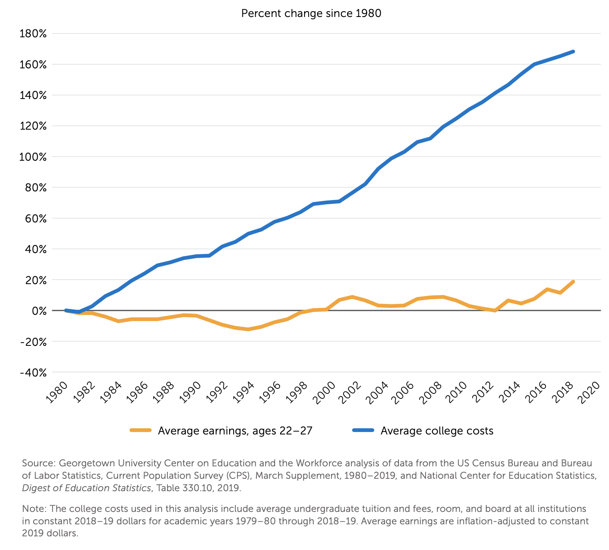

Total cost of 4-year public univeristy as a percentage of household median income by state in the US from 2010-2018
Year:
Explore the specifics and visualizations of the raw data that the percentages were derived from here:
Comparison of Average College Costs and Average Earnings for Persons Ages 22-27 in the US
"The average price tag for
undergraduate education, including tuition, fees,
room, and board, has increased by 169 percent
since 1980"

The discussion in Georgetown University Center on Education and the Workforce's report that accompanies the above
line graph explains that "while young people today need more education than ever
to compete in the labor market, a college education is more expensive than in the past."
Additionally, "It used to be possible to work one’s way through college, [but]
today, college costs are generally too high—and young people’s wages too low—for that to be
feasible."
In result, an increasing number of students are acquiring increasing amounts of student debt
to obtain a degree.